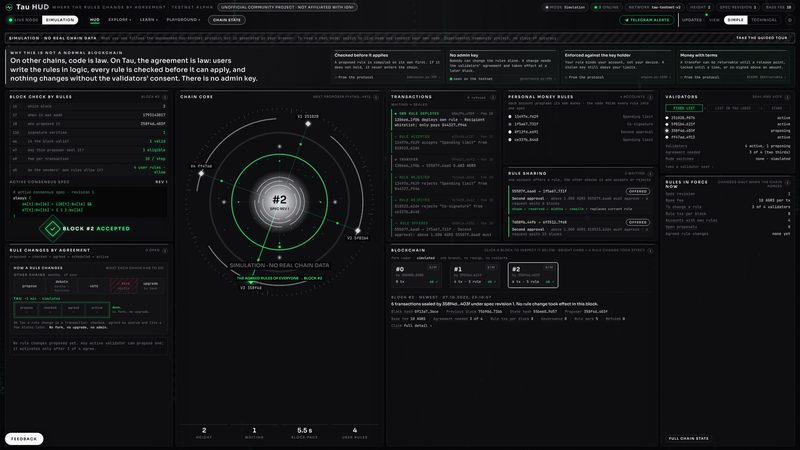
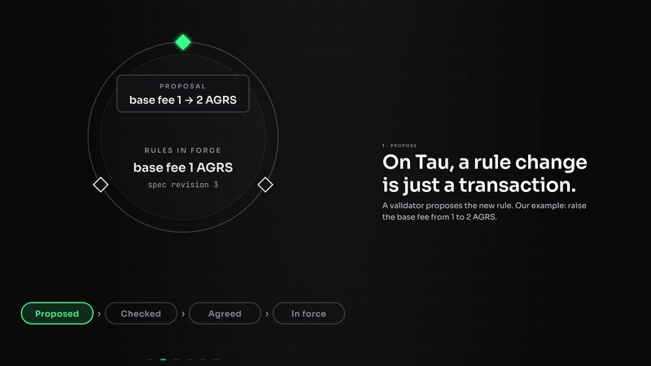
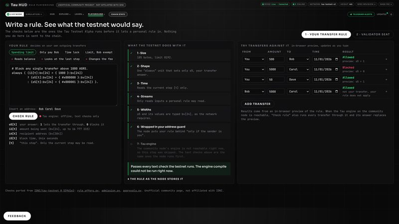
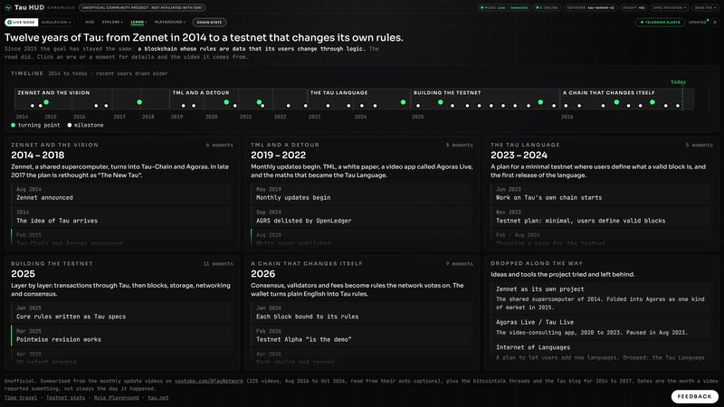
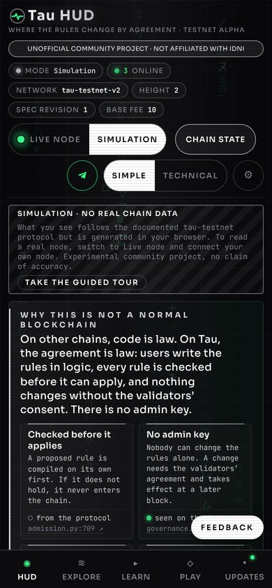
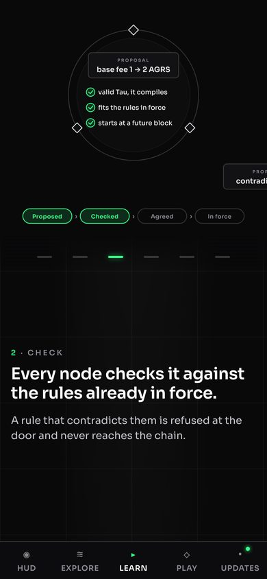
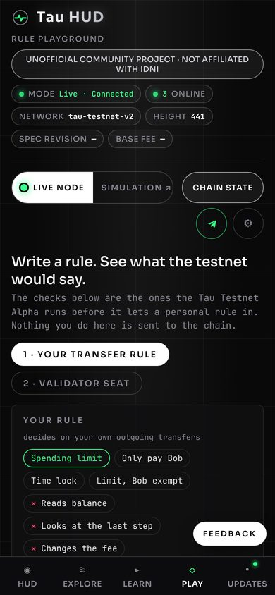
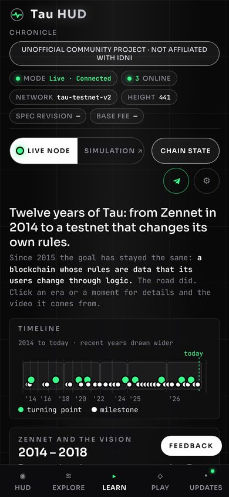

In one paragraph
Tau HUD shows the Tau testnet live: every block, every rule change and every vote, as it happens. On most blockchains a rule change means a hard fork. On Tau the rules are data on the chain: a validator proposes a new rule, every node checks it against the rules already in force, the validators agree, and it takes effect at a later block. Tau HUD makes that visible for anyone, in plain words. It is an unofficial community project, free and open source, and it reads the chain from its own testnet node.
Tagline
Where the rules change by agreement.
How to credit and link
Source: Tau HUD (tauhud.com), an unofficial live view of the Tau testnet.
Link to tauhud.com, or to the page you show, for example tauhud.com/story. Please do not change the logo or suggest that IDNI made or backs this site.
Facts
- Name
- Tau HUD
- What
- A live view of the Tau Testnet Alpha: blocks, rule changes, votes, validators, accounts
- Website
- tauhud.com
- Online since
- October 2026
- Data
- Read from our own testnet node, node.tauhud.com, through a read-only relay; open JSON API
- Pages
- HUD · Explorer · Proposals · Stats · Time travel · Accounts · Nodes · Tau in 60 seconds · Chronicle · Findings · Status · Playground · Developers
- Telegram
- t.me/tauHUDcom, alerts for every rule change; bot @tauhud_alerts_bot answers questions
- X
- @TauHUDcom
- Code
- github.com/jimb000o/tau-command-hud, MIT license, © 2026 jimb000o
- Status
- Unofficial, not affiliated with IDNI; testnet data without claim of accuracy. Tau itself: tau.net
- Questions
- Ask on GitHub or write in the Telegram channel's chat
Video · Tau in 60 seconds
Propose, check, agree, law: how Tau changes its rules without a hard fork, in six steps. No sound, so it works in a feed. The same story to scroll through: tauhud.com/story.


Live on your page
Show the testnet as it is right now instead of a picture. Paste this where your article or site takes HTML:
<iframe src="https://tauhud.com/embed/" width="100%" height="150" style="border:0;max-width:720px" title="Tau testnet live" loading="lazy"></iframe>
Live badges
Link pictures
Links to the HUD, a block, a proposal or an address show a live picture in X, Telegram and Discord, current within a minute. Picture address: node.tauhud.com/og/hud.png. More sizes, all badges and the JSON API: Developers.

Logo · “Pulse”
A heartbeat inside a ring: the chain is alive and every block is a beat. White ring and green pulse on dark; one colour where colour is not possible.


Colours: black #09090a, white #ffffff, green #39ff8a. Type: Sora for headings, JetBrains Mono for numbers and text.
Screenshots
Download all · ZIP · 5.8 MBClick a picture for the full size (PNG). Desktop at 2560 × 1440, phone at 390 wide. The ZIP holds every screenshot, logo file and the cover; the videos are separate.







